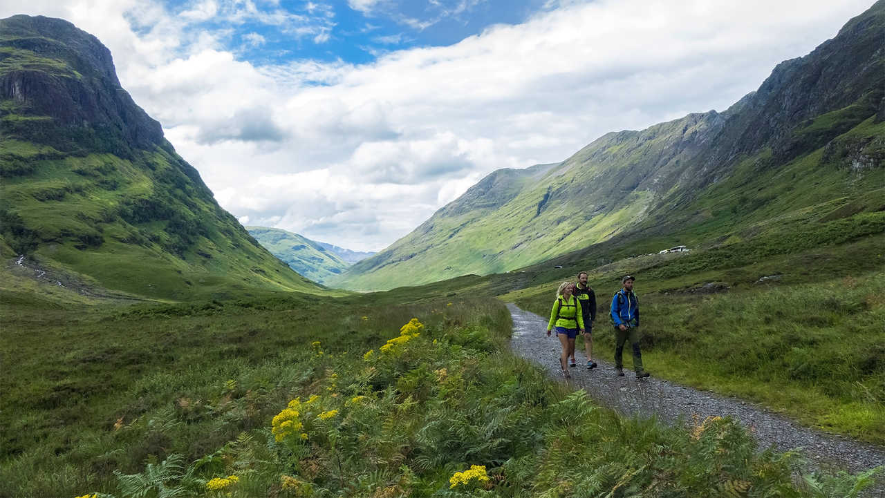
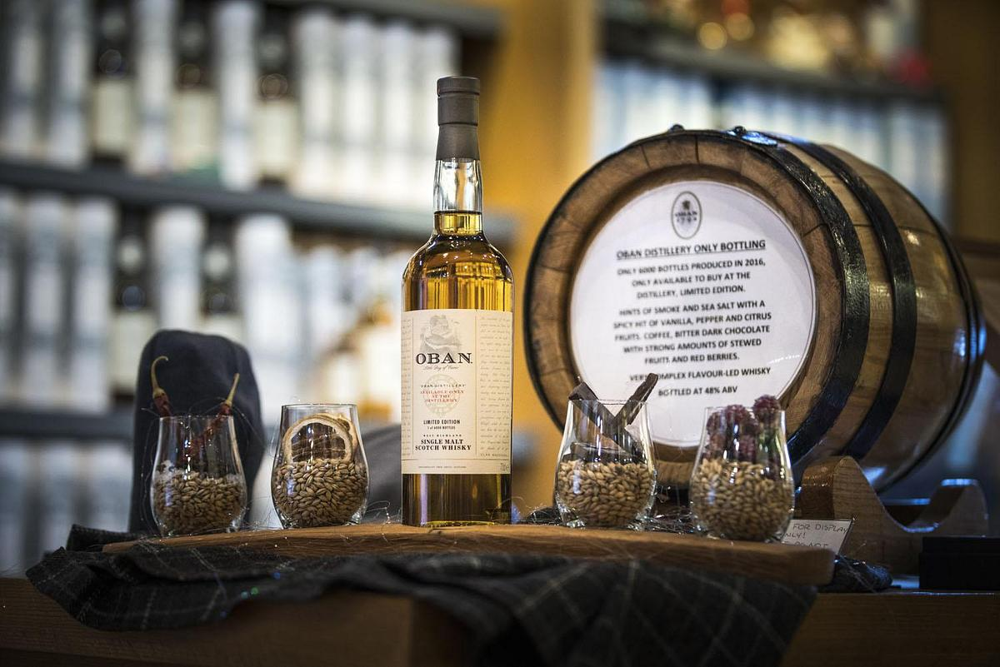
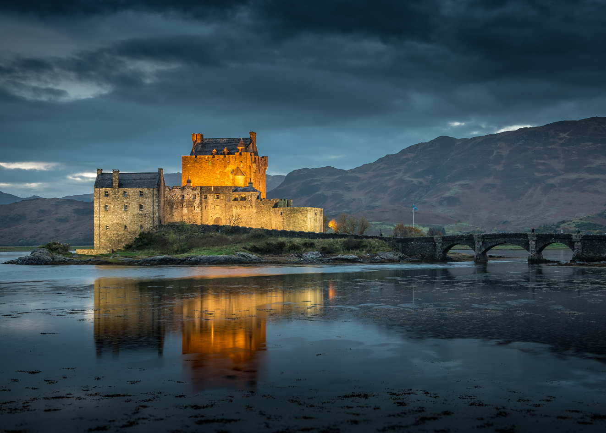

À propos de l'Écosse
L'Écosse est une destination fascinante connue pour ses paysages spectaculaires, son riche patrimoine historique et sa culture vibrante. Des châteaux médiévaux aux montagnes des Highlands, chaque coin du pays raconte une histoire unique.
Vidéo promotionnelle
Découvrez la beauté époustouflante de l'Écosse à travers cette vidéo captivante. Laissez-vous transporter par ses paysages spectaculaires, son histoire fascinante et sa culture vibrante.
Activités populaires
Randonnée dans les Highlands
Découvrez des sentiers incroyables et des panoramas à couper le souffle dans les montagnes écossaises.
Visite des distilleries de whisky
Explorez les distilleries emblématiques et dégustez le célèbre whisky écossais.
Découverte des châteaux
Plongez dans l'histoire en visitant des châteaux majestueux et mystérieux.
Les meilleurs endroits à visiter en Écosse
| Lieu | Description | Particularité |
|---|---|---|
| Édimbourg | Capitale historique avec un château emblématique et la vieille ville médiévale. | Festival international et ambiance médiévale. |
| Île de Skye | Île magnifique aux paysages sauvages et falaises spectaculaires. | Randonnée et nature préservée. |
| Loch Ness | Lac mystérieux célèbre pour la légende du monstre Nessie. | Excursions en bateau et observation du monstre. |
| Glencoe | Vallée spectaculaire avec des montagnes impressionnantes. | Randonnée et paysages dramatiques. |
| Stirling | Ville historique avec un château et un champ de bataille célèbre. | Histoire de William Wallace et des guerres d'indépendance. |
Galerie d'images
Explorez quelques-uns des plus beaux sites de l'Écosse à travers cette galerie d'images. Des châteaux emblématiques aux paysages majestueux, chaque image raconte une histoire unique.